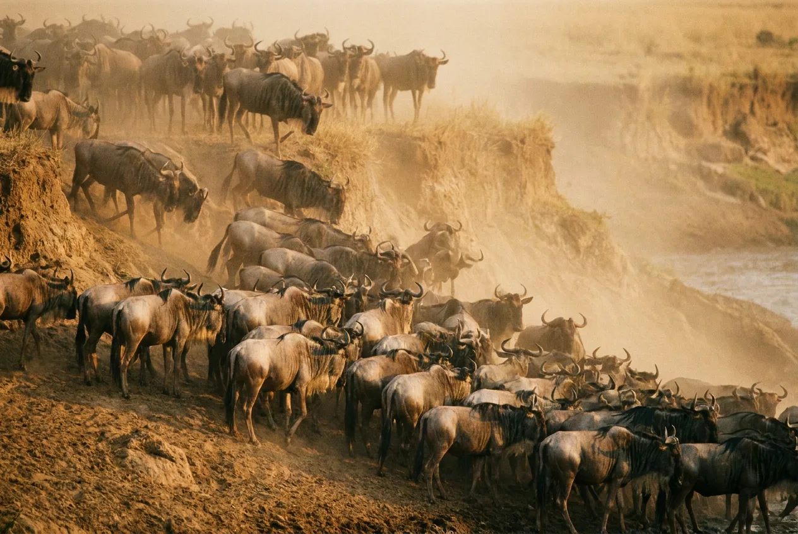
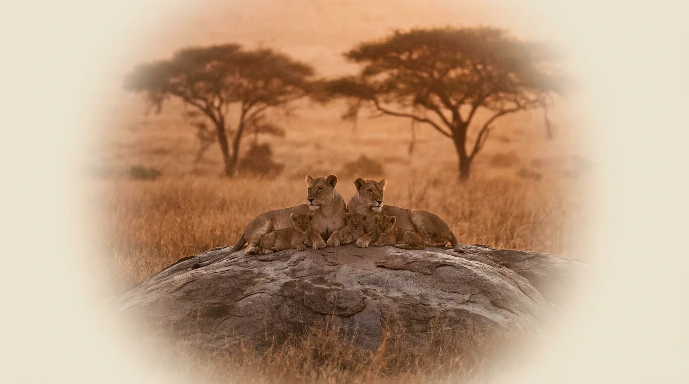
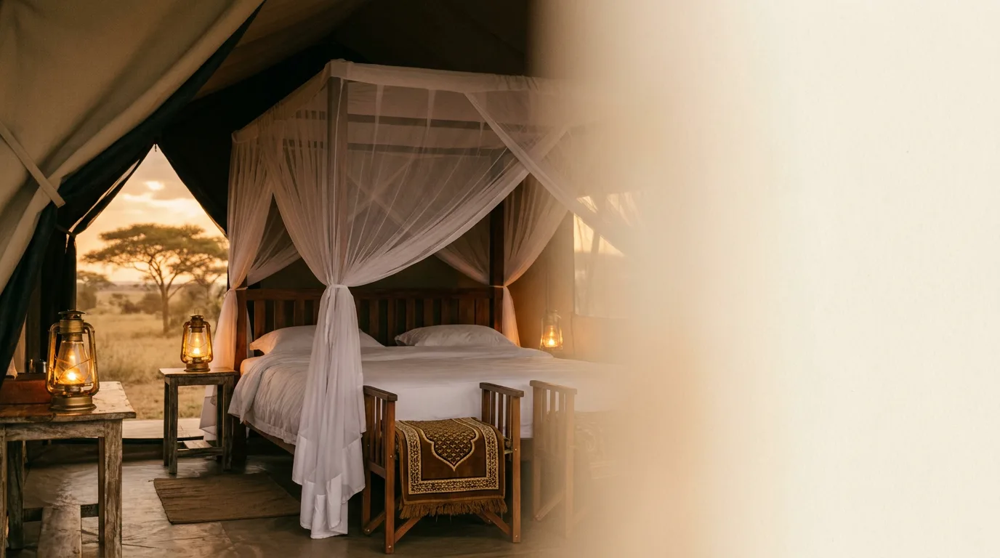
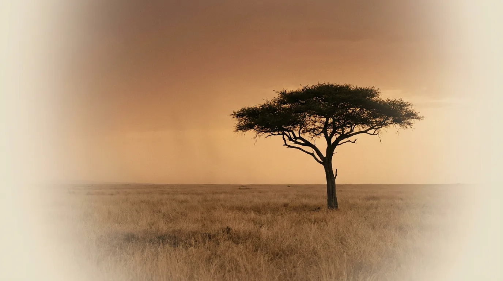

The Great Migration
Two mobile camps that follow the herds, a full day on the floor of the Ngorongoro crater, and a dawn balloon over the river crossings. Flying safari between camps.
From SAR 29,500One stop to Kilimanjaro, a forty-minute hop in a light aircraft, and the plains are under your feet before lunch.
Your guide is waiting at the airstrip.
Arabic-speaking, licensed, with a private pop-up-roof Land Cruiser, cold water in the box and the first game drive on the way to camp.
Five journeys, eight to twelve days, the Serengeti to Zanzibar.
Plan your safari
You leave Riyadh or Jeddah in the evening and land at Kilimanjaro in the morning. From there a light aircraft takes you over the Serengeti at a height where you can count wildebeest, and sets you down on a red-earth airstrip forty minutes later.
Samur is the Arabic name of the acacia, the tree under which every great safari rests. We built the company for Saudi travellers who want the real Africa without the hard edges.

Game drives happen in a closed Toyota Land Cruiser with a roof that lifts, which is how Tanzania does it: shade when you want it, the whole sky when you don't. Your guide reads tracks, stops when the children want to stop, and keeps a respectful distance from everything with teeth or tusks.
Two drives a day, dawn and late afternoon, with the hot hours in the shade at camp.

Lion, elephant, giraffe, zebra, cheetah and leopard all live within a week's drive of each other in the Serengeti and Ngorongoro. We cannot promise a leopard; nobody honest can. We can promise lions, elephants and more zebra than you can photograph, seen from the vehicle, never on foot and never fed.
From July to October the migration crosses the Mara river in the north. From January to March the herds calve in the south.

A tented camp is canvas on a wooden deck under acacias, with a real bed, a hot shower and a view. Staff meet the vehicle with cold towels and juice, carry the bags, and show you the tent. Camps are chosen for a family of eight as readily as for a couple.

Inside: linen, a mosquito net, a brass lantern, and the qibla marked by the door. Prayer mats are in every tent, and prayer times are kept in the day's plan without anyone having to ask.
At night the flap closes and the plain carries on outside.

Between the morning drive and the afternoon one, the plain goes quiet and so do you. The pools are modest and the views are not: a lodge on the crater rim looks six hundred metres down into Ngorongoro, and a camp in the Serengeti looks out to a horizon with nothing on it but acacias.

Grilled meat, rice, salads, flatbread, dates and tea, with an Arabic breakfast on request. The kitchen is halal in every camp we use, and the guide joins the table if you ask him to. Lanterns, a fire pit, and a sky with more stars than you have seen since childhood.

The Maasai have herded cattle on these plains for centuries. A visit to a boma near the Ngorongoro highlands is a walk through the homestead, the cattle enclosure and the beadwork, with a family who have agreed to host you. We go with a Maasai guide, we go in the morning, and we pay the community directly.

A short flight from the Serengeti lands you in Zanzibar in time for lunch. White sand at Nungwi, dhows on the water, the spice gardens, and the old stone town with its carved doors and its mosques. Three or four nights, then home.
Each one comes with flights, camps, guide, transfers and the e-visa, priced in riyals per person. Change anything and we rebuild the price the same day.

Two mobile camps that follow the herds, a full day on the floor of the Ngorongoro crater, and a dawn balloon over the river crossings. Flying safari between camps.
From SAR 29,500
Five nights of game drives in Tarangire and the central Serengeti, then a short flight to the coast for four nights on Nungwi beach. The journey most families book first.
From SAR 34,900
Bush planes carry you between three camps in the southern and northern Serengeti, so every morning and afternoon is spent with the animals, not on the road. Balloon included.
From SAR 38,500
Short drives, family suites with pools, a guide who turns every drive into a story, and three days of sea at the end. Children from six; one family of up to eight.
From SAR 31,500 per adult · children from SAR 18,900
One private camp, one private aircraft, one private island villa. A chef who cooks what you grew up with, and nobody else on the horizon. Up to ten guests.
From SAR 68,000
Tell us when you can travel and who is coming. We reply within a day, in Arabic or English, with a first itinerary and price.